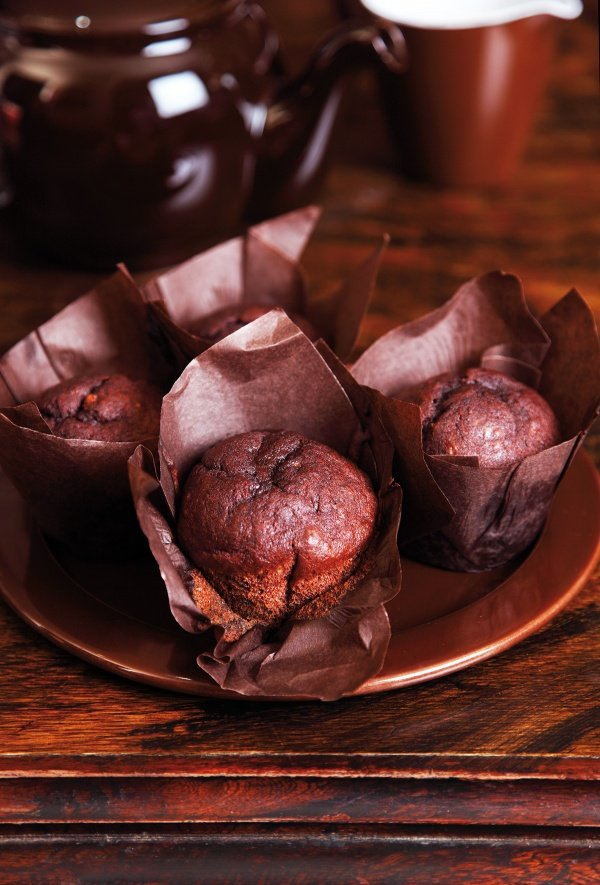

About the recipe
I think of muffins as a treaty weekend breakfast, but these look so darkly elegant, especially in
their matching dark-brown, tulip-skirted party frocks, that they positively beg to be brought out with
coffee after dinner. Certainly, while most muffins are at their best pretty well straight out of the oven,
the bananas in the mixture make sure these beauties keep their moist, eat-me texture long after those less
favoured have staled and lost their allure.
Ingredients
Makes: 12 muffins
- 3 medium-450g(total weight with skin on)-very ripe or overipe bananas
- 125ml vegetable oil
- 2 large eggs
- 100g soft light brown sugar
- 225g plain flour
- 3 tablespoon best quality cocoa powder
- 1 teaspoon baking soda
Method
-
Preheat the oven to 200°C/180°C Fan/400°F/gas mark 6 and line a 12-bun muffin tin with papers.
Don't worry about getting special papers: regular muffin cases will do the job.
-
Peel and mash the bananas by hand or with a freestanding mixer. Still beating and mashing, add the oil
followed by the eggs and sugar.
-
Mix the flour, cocoa powder and bicarb together and add this mixture, beating gently, to the banana mixture,
then spoon it into the prepared papers.
-
Bake in the preheated oven for 15-20 minutes, by which time the muffins should be dark, rounded and peeking proudly out of their cases.
Allow to cool slightly in their tin before removing to a wire rack.
Back to Top
Home